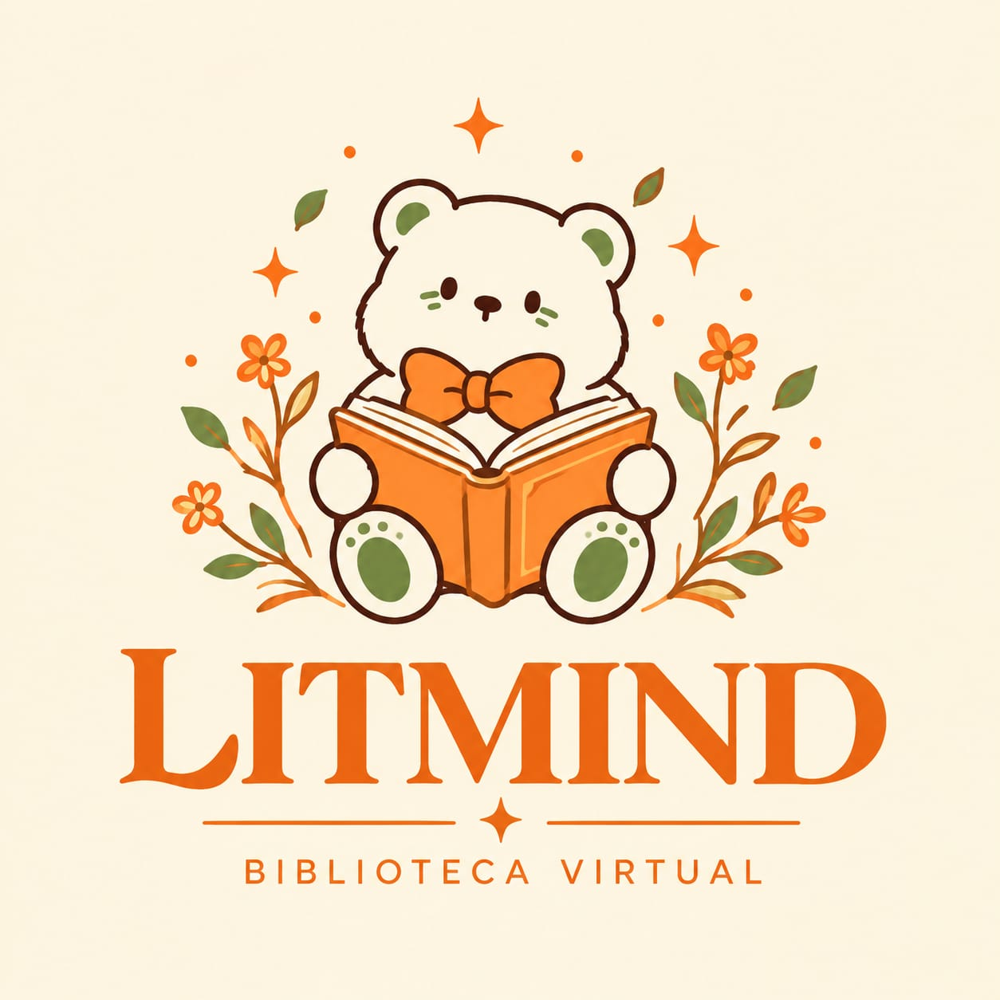

Uma biblioteca ao seu alcance.
Explore livros e conteúdos de diferentes áreas do conhecimento.
▤
Descubra uma biblioteca digital feita para acompanhar suas ideias, suas descobertas e cada novo capítulo da sua jornada.
Uma experiência que une tecnologia, organização e o prazer de descobrir algo novo a cada leitura.

O LITMIND é um aplicativo de biblioteca virtual desenvolvido para facilitar o acesso à leitura e aos conteúdos educacionais.
Em um único ambiente, reúne livros digitais e ferramentas que ajudam a organizar, acompanhar e personalizar a experiência de cada leitor.
Conheça os recursos →Ferramentas pensadas para tornar a leitura mais organizada, personalizada e agradável.
Explore livros e conteúdos de diferentes áreas do conhecimento.
Localize obras e descubra novos conteúdos.
Salve os livros que despertaram seu interesse.
Marque páginas, destaque trechos e registre suas anotações.
Utilize uma aparência mais escura durante a leitura.
Ajuste a experiência visual conforme suas preferências.
Mais do que um mascote, Lume representa a curiosidade, a descoberta e a vontade de aprender. Ele acompanha a identidade do LITMIND e torna a experiência mais acolhedora e reconhecível.
Continue explorando →Uma experiência simples para você começar a explorar o universo da leitura.
Entre ou crie seu cadastro para acessar o aplicativo.
Navegue pelas obras disponíveis e escolha o que deseja ler.
Aproveite os recursos e acompanhe suas descobertas.
O LITMIND foi desenvolvido para Android. O acesso ao arquivo oficial de instalação será disponibilizado nesta página quando estiver preparado.